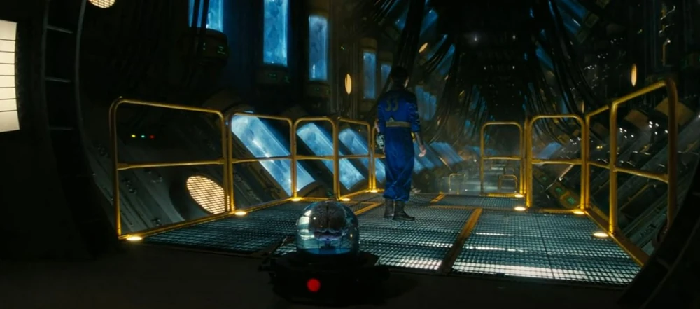
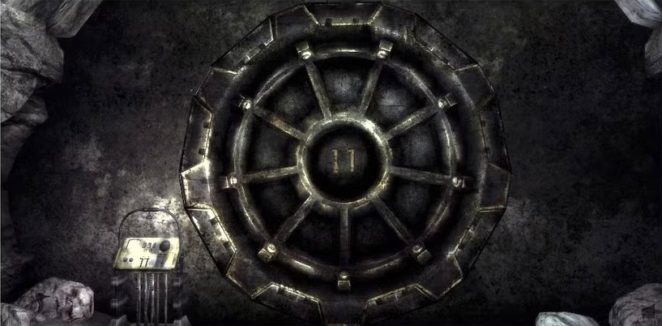
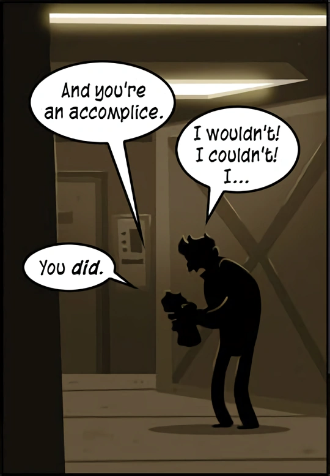
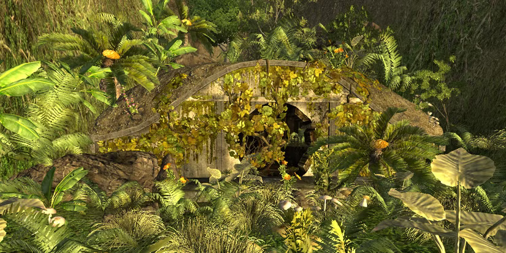

Praise the Foresight

Vault 31 where residents were stored in cryogenic stasis

Vault 11
One of the most heinous vaults in the Fallout universe. Vault 11 required its inhabitants to vote for an annual sacrifice or the life support systems would shut down. However, this was a ruse, in truth refusing to sacrifice would have prompted a commendation from Vault-Tec and unlock the vault door. Unfortunately the residents of this vault didn't learn this for many years.

Vault 77
Equal parts silly and evil, vault 77 only allowed one dweller inside. Shortly after a year had passed, he found a box filled with puppets in the vault. In an attempt to stave off boredom and loneliness he began playing with the puppets. Over time, he began to believe they were speaking to him.

Vault 22
A sprawling garden amidst a desert, most peculiar indeed! Vault 22 was initially used to research staple crops in an attempt to combat world hunger. However, things took a turn for the worse when the scientist began to experiment with a fungus based pesticide. Over time the fungus managed to spread to the scientists resulting in a few deaths and the rapid evacuation of the vault.